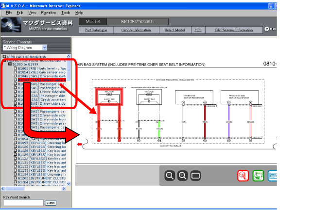
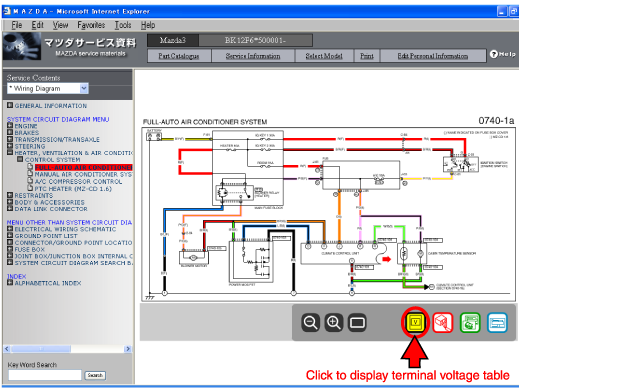

|
| • | ในขณะตำแหน่งที่กะพริบแสดงตำแหน่งบกพร่องที่เป็นไปได้บนผังวงจรไฟฟ้าสำหรับรหัสวิเคราะห์ปัญหานั้นๆ แต่ไม่ได้แสดงตำแหน่งบกพร่องที่เป็นได้ทั้งหมด |
| • | ถ้าเลือกรหัสวิเคราะห์ปัญหาที่ตรงกับความบกพร่องที่ไม่เกี่ยวข้องกับวงจรไฟฟ้า (ตัวอย่างเช่น: B1047 การลัดวงจรของโมดูลถุงลมด้านข้างคนขับและโมดูลถุงลมอื่นๆ) หน้าของคู่มือซ่อมที่ตรงกับส่วนนั้นจะปรากฏขึ้น |

